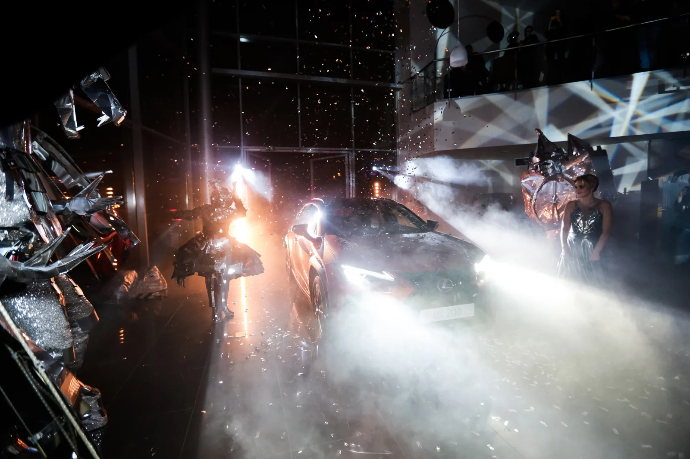
Lexus UX
Городской характер.
Яркое появление.
Презентация Lexus UX для более чем 250 гостей: свет, музыка и интерактивные пространства, раскрывающие характер нового автомобиля.
Не просто увидеть.
Почувствовать UX.
Для Рольф Ясенево Lexus презентация стала продолжением рекламной идеи модели. Артистов и программу подбирали так, чтобы автомобиль, сценические номера и оформление говорили на одном языке.
Интерактивные зоны знакомили гостей с концепцией и технологиями UX. Световое оформление, музыка и партнёрские активности связывали отдельные впечатления в один насыщенный вечер.
Свет. Ритм.
Энергия премьеры.
Зеркальные костюмы, музыкальные выступления и конфетти создавали смену настроений. Каждый эпизод добавлял презентации выразительности, сохраняя автомобиль главным героем.
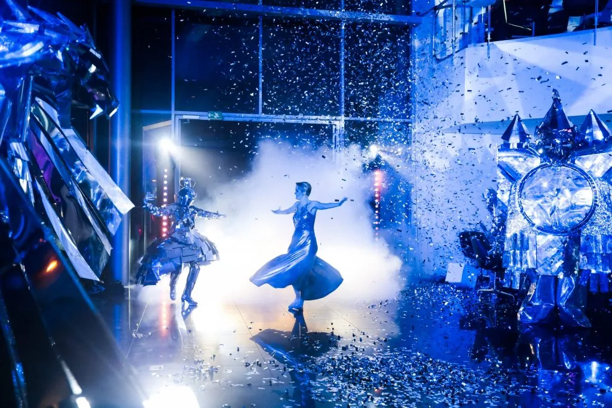
UX в деталях.
Вечер в движении.
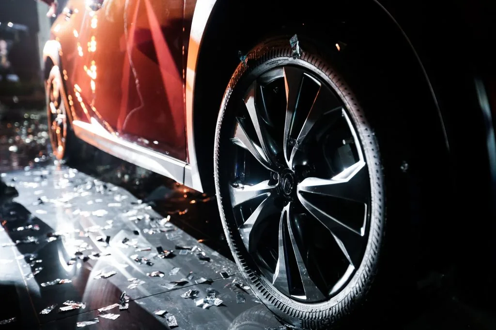
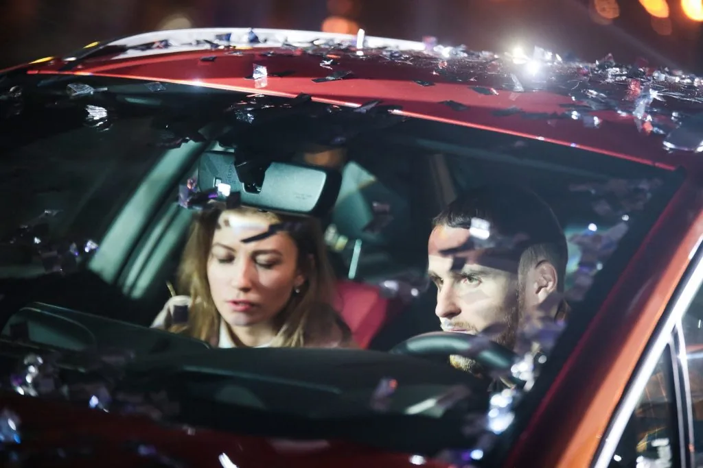
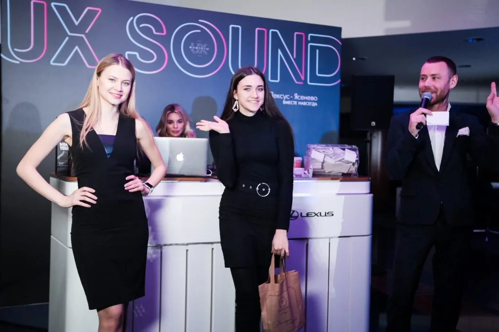
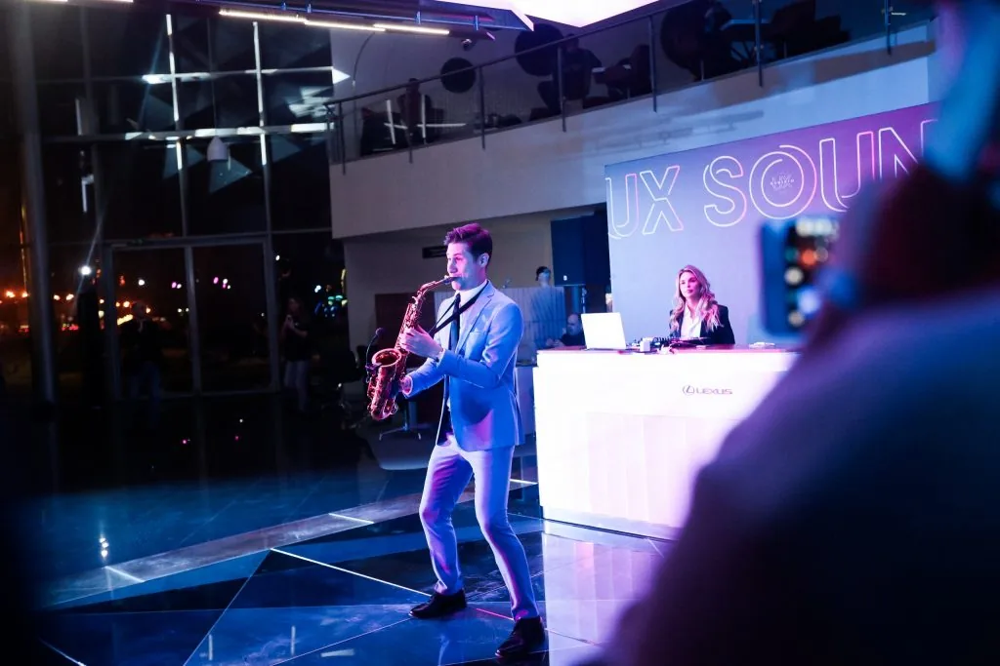
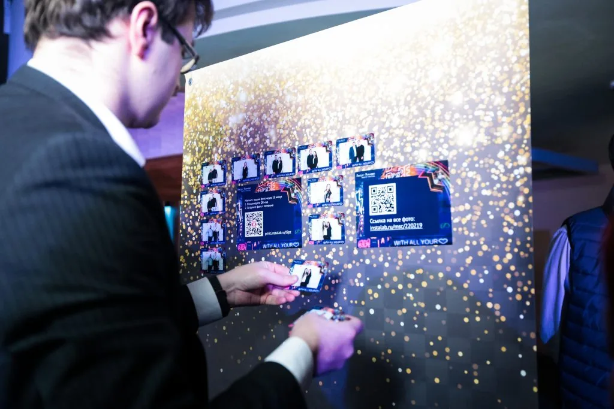
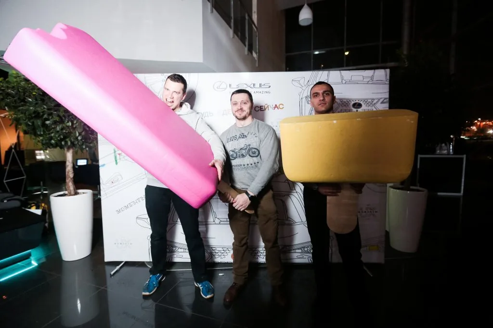
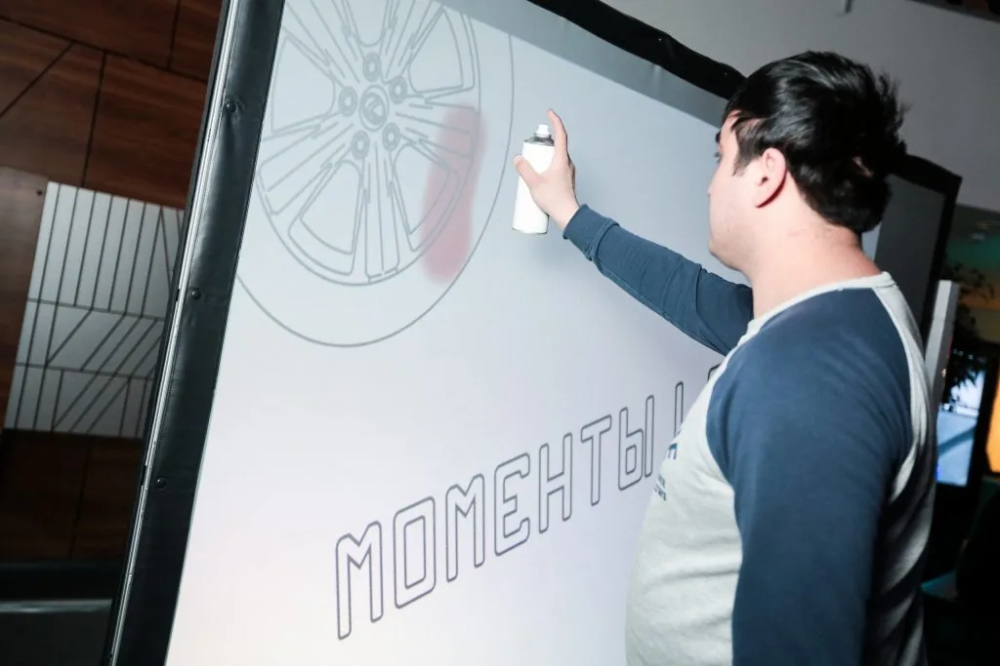
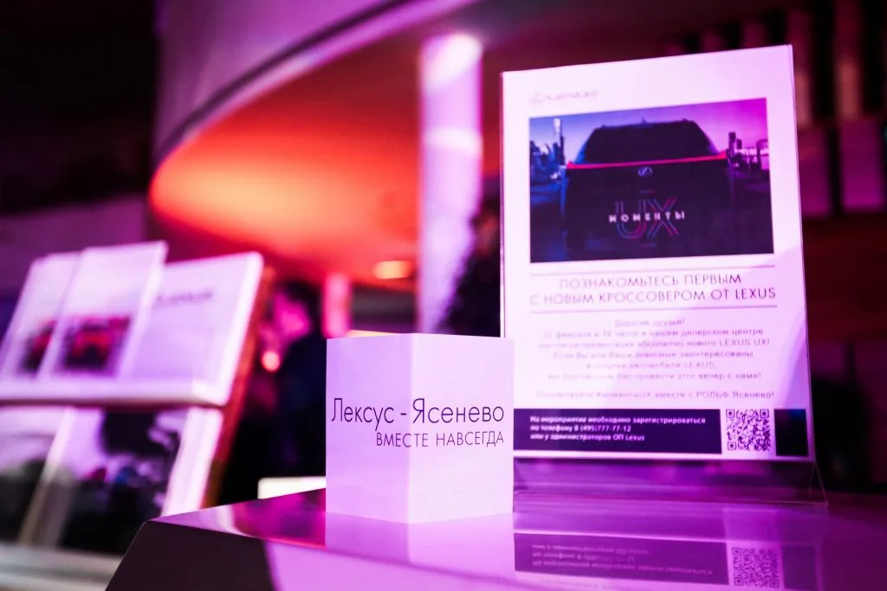
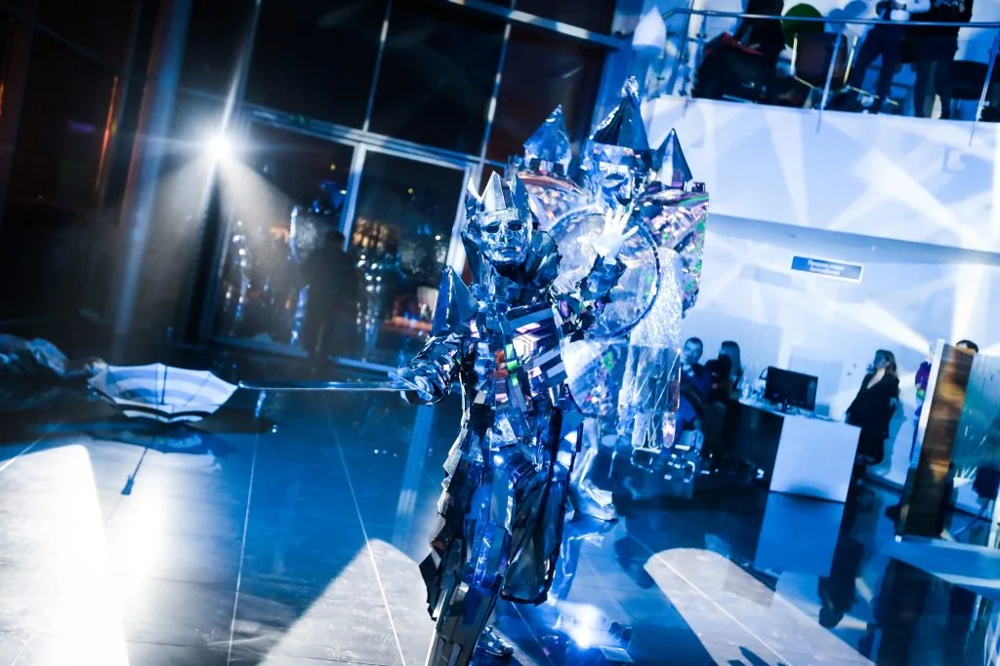
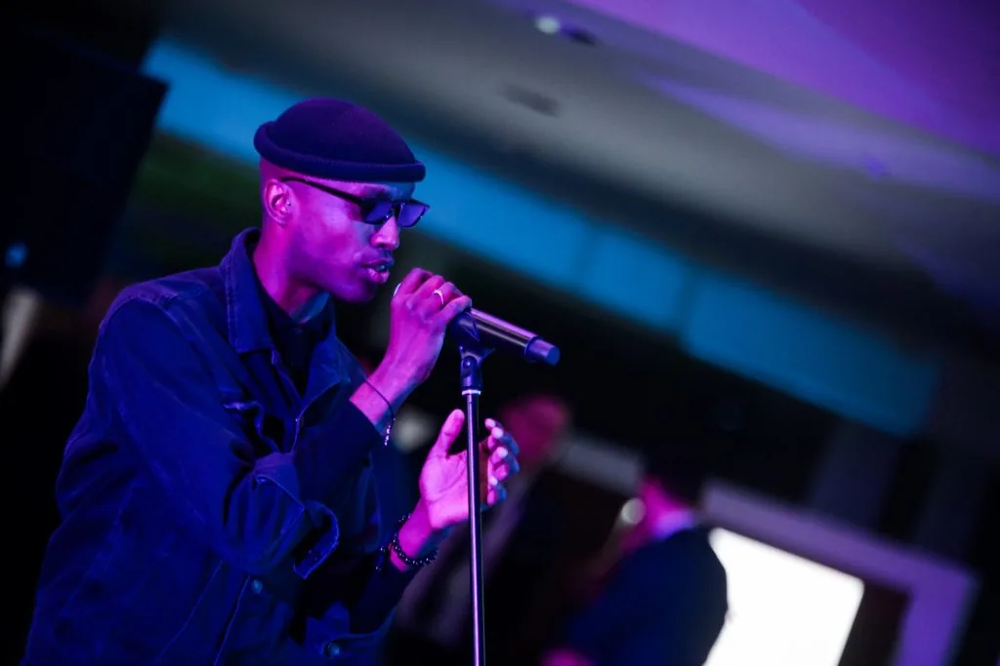
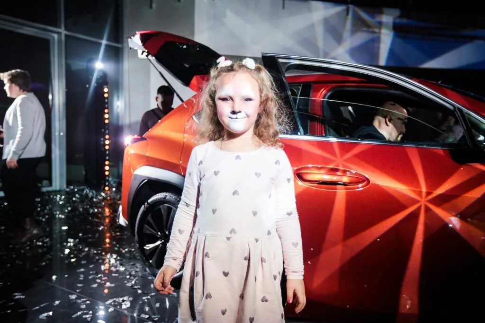
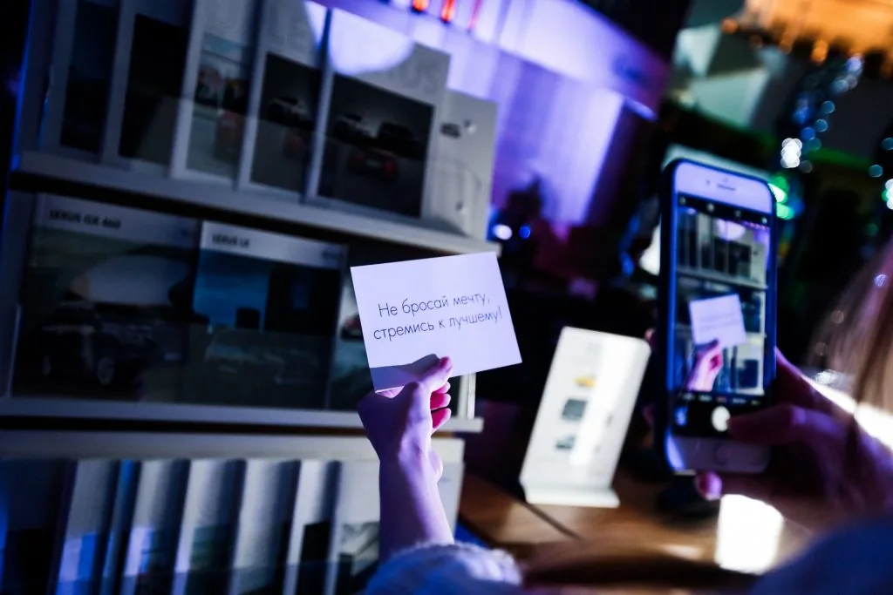
СЛЕДУЮЩИЙ ПРОЕКТ